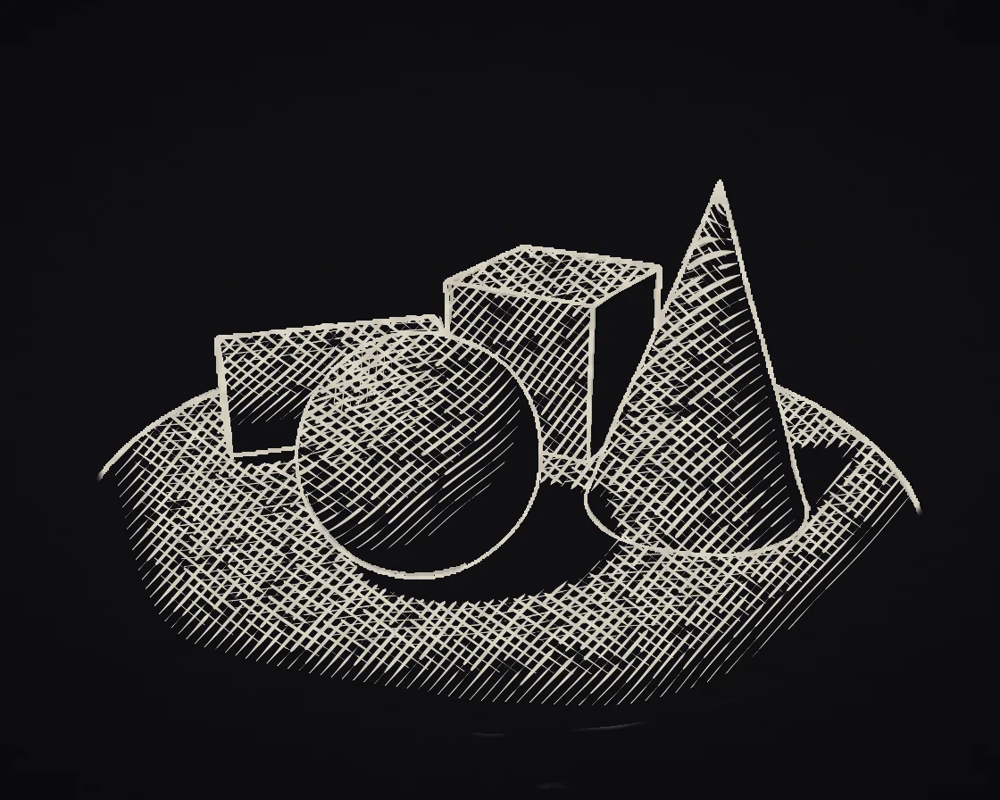

Pen sketch
Pen sketch is a WebGL effect: hatching layered by lighting; outlines from depth and normal jumps. One plain JavaScript file with no dependencies; add it with npx motion-library add pen-sketch.

Open it live, tune it and copy the code
What is Pen sketch?
Plaster solids on a turntable drawn in boiling blue-black ink with hatching that deepens into shadow.
How does Pen sketch work?
A G-buffer pass stores light, depth and normal; the pen pass draws outlines at jumps and layers hatching directions by darkness, redrawn on twos.
How do I add Pen sketch to my website?
- In your project folder, run
npx motion-library add pen-sketch. It writesanimations/pen-sketch.js. Needs Node 18 or newer. - Import it and call it with a container element that has a size:
import fx from './animations/pen-sketch.js'; const stop = fx(document.querySelector('#hero')); - Call
stop()to clean up, for example when a component unmounts.
Every setting below is also a flag, so you can install it already tuned: npx motion-library add pen-sketch --density 2.
What settings can I tweak?
| Setting | Flag | Default | Range | Step |
|---|---|---|---|---|
| Hatch density | --density | 1 | 0.5 to 2 | 0.05 |
| Boils / second | --boil | 8 | 1 to 24 | 1 |
| Turntable speed | --speed | 1 | 0 to 3 | 0.1 |
Specifications
- Renderer
- WebGL
- Category
- Shaders & glitch
- Dependencies
- None
- File size
- 11.7 KB, unminified
- Interactive
- No: it plays on its own
- Reduced motion
- Plays the same for everyone
- Licence
- MIT-0: use it anywhere, no credit needed
Source code
// A drawing-class still life (plaster solids on a turntable), drawn in pen. A first pass raymarches the scene and keeps,
// for every pixel, how lit it is, how far away it is and which way the surface faces. A second pass draws with that:
// outlines go wherever depth or facing jumps, and the shading is hatching. On black stock it draws the light: shadow stays
// bare paper, then one set of strokes appears, then a cross set as it turns to light, then a third and a fourth on the brightest faces. The
// strokes bend a little with the surface, so they wrap around the forms. Every line wobbles like a hand drew it, with
// gaps and tapered ends. Like hand-drawn animation, the scene moves on twos (12 steps a second), and the whole drawing is
// redrawn a few times a second with new wobbles, so the lines "boil". Toward the edges the drawing thins out, unfinished.
const PARAMS = { density: 1, boil: 8, speed: 1 };
export default function (stage) {
const canvas = document.createElement('canvas');
canvas.style.cssText = 'position:absolute;inset:0;width:100%;height:100%;display:block';
stage.append(canvas);
const gl = canvas.getContext('webgl2', { antialias: false });
if (!gl || !gl.getExtension('EXT_color_buffer_float')) { stage.textContent = 'This needs WebGL2 with float render targets.'; return () => canvas.remove(); }
const vs = `#version 300 es
in vec2 p; out vec2 uv; void main() { uv = p * .5 + .5; gl_Position = vec4(p, 0, 1); }`;
const noiseGL = `
float hash(vec2 p) { return fract(sin(dot(p, vec2(127.1, 311.7))) * 43758.5453); }
float noise(vec2 p) { vec2 i = floor(p), f = fract(p); f = f * f * (3. - 2. * f); return mix(mix(hash(i), hash(i + vec2(1, 0)), f.x), mix(hash(i + vec2(0, 1)), hash(i + 1.), f.x), f.y); }`;
// ── pass 1: the scene, as light / depth / normal
const sceneFs = `#version 300 es
precision highp float; in vec2 uv; out vec4 o; uniform vec2 R; uniform float A;
mat2 rot(float a) { float c = cos(a), s = sin(a); return mat2(c, -s, s, c); }
float sdBox(vec3 p, vec3 b) { vec3 q = abs(p) - b; return length(max(q, 0.)) + min(max(q.x, max(q.y, q.z)), 0.); }
float sdCyl(vec3 p, float r, float h) { vec2 d = abs(vec2(length(p.xz), p.y)) - vec2(r, h); return min(max(d.x, d.y), 0.) + length(max(d, 0.)); }
float sdCone(vec3 p, float r, float h) { vec2 q = vec2(r, -h), w = vec2(length(p.xz), p.y - h); vec2 a = w - q * clamp(dot(w, q) / dot(q, q), 0., 1.), b = w - q * vec2(clamp(w.x / q.x, 0., 1.), 1.);
float k = sign(q.y), d = min(dot(a, a), dot(b, b)), s = max(k * (w.x * q.y - w.y * q.x), k * (w.y - q.y)); return sqrt(d) * sign(s); }
float map(vec3 p) {
float d = sdCyl(p + vec3(0, .09, 0), 1.75, .09) - .01; // the turntable
p.xz *= rot(A);
vec3 q = p - vec3(-.62, .37, .25); q.xz *= rot(.5);
d = min(d, sdBox(q, vec3(.36)) - .006); // cube
d = min(d, length(p - vec3(.72, .44, -.28)) - .44); // sphere
d = min(d, sdCone(p - vec3(.25, 0, .82), .46, 1.35)); // cone
q = p - vec3(-.42, .26, -.78); q.yz *= rot(1.5708); q.xy *= rot(.3);
d = min(d, sdCyl(q, .26, .5) - .005); // a cylinder lying on its side
return d;
}
vec3 nrm(vec3 p) { vec2 e = vec2(.001, -.001); return normalize(e.xyy * map(p + e.xyy) + e.yyx * map(p + e.yyx) + e.yxy * map(p + e.yxy) + e.xxx * map(p + e.xxx)); }
float shadow(vec3 ro, vec3 rd) { float r = 1., t = .02; for (int i = 0; i < 50; i++) { float h = map(ro + rd * t); r = min(r, 14. * h / t); t += clamp(h, .015, .25); if (r < .002 || t > 7.) break; } return clamp(r, 0., 1.); }
void main() {
vec2 q = (uv * 2. - 1.) * vec2(R.x / R.y, 1.);
vec3 ro = vec3(0, 2.2, -4.5), ta = vec3(0, .36, 0);
vec3 f = normalize(ta - ro), r = normalize(cross(vec3(0, 1, 0), f)), u = cross(f, r), rd = normalize(f * 2.85 + r * q.x + u * q.y);
float t = 0.; bool hit = false;
for (int i = 0; i < 120; i++) { float h = map(ro + rd * t); if (h < .0008) { hit = true; break; } t += h; if (t > 14.) break; }
if (!hit) { o = vec4(1, 30, 0, 0); return; }
vec3 p = ro + rd * t, n = nrm(p), L = normalize(vec3(-.62, 1.1, -.42));
float dif = max(dot(n, L), 0.) * shadow(p + n * .003, L);
float tone = .08 + .92 * dif;
tone += .1 * max(-n.z, 0.) * (1. - dif); // a little reflected light in the shadows
o = vec4(clamp(tone, 0., 1.), t, n.x, n.y);
}`;
// ── pass 2: the pen
const penFs = `#version 300 es
precision highp float; in vec2 uv; out vec4 o;
uniform sampler2D G; uniform vec2 R, GR; uniform float DPR, SEED, DEN;` + noiseGL + `
float layer(vec2 sp, float ang, float spacing, float w, float seed, vec2 bend) {
vec2 d = vec2(cos(ang), sin(ang)), nr = vec2(-d.y, d.x);
vec2 wob = (vec2(noise(sp * .015 + seed), noise(sp * .015 + seed + 9.1)) - .5) * 7.; // the hand drifts
vec2 q = sp + wob;
float v = dot(q, nr) / spacing + dot(bend, vec2(1.6, 1.1)) + seed * .37; // bend with the form
float u = dot(q, d), id = floor(v);
float len = 26. + 70. * hash(vec2(id, seed));
float s = fract(u / len + hash(vec2(id, seed + 3.)));
float taper = smoothstep(.0, .12, s) * smoothstep(1., .82, s) * step(.07, s); // strokes with gaps and tapered ends
float wl = w * taper * (.75 + .5 * hash(vec2(id, seed + 5.)));
float dist = abs(fract(v) - .5) * spacing;
return smoothstep(wl + .6 / DPR, wl - .4 / DPR, dist);
}
vec4 gb(vec2 p) { return texture(G, p); }
float edge(vec2 p, float r) {
vec2 e = r / GR;
vec4 c = gb(p), a = gb(p + vec2(e.x, 0)), b = gb(p - vec2(e.x, 0)), cc = gb(p + vec2(0, e.y)), dd = gb(p - vec2(0, e.y));
float z = min(c.y, 30.);
float dz = (abs(a.y - b.y) + abs(cc.y - dd.y)) / z; // jumps in depth: silhouettes
float dn = length(a.zw - b.zw) + length(cc.zw - dd.zw); // jumps in facing: creases
return max(smoothstep(.06, .12, dz), smoothstep(.35, .6, dn));
}
void main() {
vec2 sp = gl_FragCoord.xy / DPR; // CSS pixels: line widths stay put on any screen
vec2 cuv = gl_FragCoord.xy / R;
vec2 cen = cuv - .5;
// the outline: sampled through a wobbly offset, twice, like a quick sketchy overdraw
vec2 w1 = (vec2(noise(sp * .02 + SEED * 3.1), noise(sp * .02 + SEED * 5.7 + 4.)) - .5) * 3.2 / R * DPR;
vec2 w2 = (vec2(noise(sp * .03 + SEED * 1.3 + 8.), noise(sp * .03 + SEED * 2.9 + 2.)) - .5) * 4.5 / R * DPR;
float pres = .8 + .4 * noise(sp * .05 + SEED); // pen pressure
// ink is ink: the edge test is pushed to solid lines; the second, quicker pass only covers stretches of them
float ln = smoothstep(.25, .55, edge(cuv + w1, 1.1 * pres));
ln = max(ln, smoothstep(.3, .6, edge(cuv + w2, .8)) * step(.45, noise(sp * .04 + SEED * 2.)) * .85);
vec4 g = gb(cuv + w1 * .5);
// on black stock the pen draws the light: lit faces get the dense hatching, shadow stays bare paper, empty space stays blank
float tone = g.y > 29. ? 1. : 1. - .88 * g.x;
// the drawing is unfinished toward the edges of the sheet
float fin = smoothstep(.5, .32, length(cen * vec2(1., 1.25)) + (noise(sp * .012 + SEED * .3) - .5) * .18);
tone = mix(1., tone, fin);
float sc = 1. / DEN, ink = 0.;
vec2 bend = g.zw;
ink = max(ink, layer(sp, .85, 5.2 * sc, mix(.2, .9, smoothstep(.8, .42, tone)), SEED, bend) * step(tone, .8));
ink = max(ink, layer(sp, -.62, 5.6 * sc, mix(.2, .85, smoothstep(.55, .22, tone)), SEED + 11., bend * .6) * step(tone, .55));
ink = max(ink, layer(sp, .12, 4.6 * sc, mix(.2, .8, smoothstep(.32, .1, tone)), SEED + 23., -bend) * step(tone, .32));
ink = max(ink, layer(sp, 1.45, 4. * sc, mix(.2, .8, smoothstep(.16, .04, tone)), SEED + 37., bend * .3) * step(tone, .16));
ink = max(ink, ln * smoothstep(.04, .14, fin + (noise(sp * .03 + SEED) - .5) * .12)); // outlines break off rather than fade
// paper and ink
vec3 paper = vec3(.062, .06, .074) * (.9 + .12 * noise(sp * .7) + .08 * noise(sp * vec2(.08, .5))); // black stock
paper *= 1. - .35 * smoothstep(.35, .8, length(cen * vec2(1., 1.2)));
vec3 inkc = vec3(.95, .92, .85) * (.88 + .12 * noise(sp * .2 + SEED)); // white gel pen
o = vec4(mix(paper, inkc, ink * .92), 1);
}`;
const sh = (t, s) => { const x = gl.createShader(t); gl.shaderSource(x, s); gl.compileShader(x); if (!gl.getShaderParameter(x, gl.COMPILE_STATUS)) throw new Error(gl.getShaderInfoLog(x)); return x; };
const mk = fs => { const p = gl.createProgram(); gl.attachShader(p, sh(gl.VERTEX_SHADER, vs)); gl.attachShader(p, sh(gl.FRAGMENT_SHADER, fs)); gl.bindAttribLocation(p, 0, 'p'); gl.linkProgram(p); if (!gl.getProgramParameter(p, gl.LINK_STATUS)) throw new Error(gl.getProgramInfoLog(p)); const u = {}; return { p, u: n => u[n] ??= gl.getUniformLocation(p, n) }; };
const scene = mk(sceneFs), pen = mk(penFs);
gl.bindBuffer(gl.ARRAY_BUFFER, gl.createBuffer()); gl.bufferData(gl.ARRAY_BUFFER, new Float32Array([-1, -1, 3, -1, -1, 3]), gl.STATIC_DRAW);
gl.enableVertexAttribArray(0); gl.vertexAttribPointer(0, 2, gl.FLOAT, false, 0, 0);
const gtex = gl.createTexture(), gfb = gl.createFramebuffer();
let GW = 1, GH = 1, dpr = 1, dirty = true;
const resize = () => {
const w = stage.clientWidth || 1, h = stage.clientHeight || 1;
dpr = Math.min(devicePixelRatio, 2); canvas.width = w * dpr | 0; canvas.height = h * dpr | 0;
// the raymarch runs on a pixel budget; the pen pass runs at full resolution so the lines stay crisp
const d = Math.min(devicePixelRatio, 2, Math.max(0.5, Math.sqrt(330000 / (w * h))));
GW = Math.max(1, w * d | 0); GH = Math.max(1, h * d | 0);
gl.bindTexture(gl.TEXTURE_2D, gtex); gl.texImage2D(gl.TEXTURE_2D, 0, gl.RGBA16F, GW, GH, 0, gl.RGBA, gl.HALF_FLOAT, null);
gl.texParameteri(gl.TEXTURE_2D, gl.TEXTURE_MIN_FILTER, gl.LINEAR); gl.texParameteri(gl.TEXTURE_2D, gl.TEXTURE_MAG_FILTER, gl.LINEAR);
gl.texParameteri(gl.TEXTURE_2D, gl.TEXTURE_WRAP_S, gl.CLAMP_TO_EDGE); gl.texParameteri(gl.TEXTURE_2D, gl.TEXTURE_WRAP_T, gl.CLAMP_TO_EDGE);
gl.bindFramebuffer(gl.FRAMEBUFFER, gfb); gl.framebufferTexture2D(gl.FRAMEBUFFER, gl.COLOR_ATTACHMENT0, gl.TEXTURE_2D, gtex, 0);
dirty = true;
};
const ro = new ResizeObserver(resize); ro.observe(stage); resize();
let raf, t = 0, ang = 0.6, last = performance.now(), lastStep = -1, lastSeed = -1;
function frame(now) {
const dt = Math.min(0.05, (now - last) / 1000); last = now; t += dt; ang += dt * 0.32 * PARAMS.speed;
const step = Math.floor(t * 12), seed = Math.floor(t * Math.max(0.5, PARAMS.boil));
// the scene only changes 12 times a second (on twos) and the pen only redraws when it boils, so most frames are free
if (step !== lastStep || dirty) {
gl.bindFramebuffer(gl.FRAMEBUFFER, gfb); gl.viewport(0, 0, GW, GH); gl.useProgram(scene.p);
gl.uniform2f(scene.u('R'), GW, GH); gl.uniform1f(scene.u('A'), ang);
gl.drawArrays(gl.TRIANGLES, 0, 3);
}
if (step !== lastStep || seed !== lastSeed || dirty) {
gl.bindFramebuffer(gl.FRAMEBUFFER, null); gl.viewport(0, 0, canvas.width, canvas.height); gl.useProgram(pen.p);
gl.activeTexture(gl.TEXTURE0); gl.bindTexture(gl.TEXTURE_2D, gtex); gl.uniform1i(pen.u('G'), 0);
gl.uniform2f(pen.u('R'), canvas.width, canvas.height); gl.uniform2f(pen.u('GR'), GW, GH);
gl.uniform1f(pen.u('DPR'), dpr); gl.uniform1f(pen.u('SEED'), (seed % 97) * 1.618); gl.uniform1f(pen.u('DEN'), PARAMS.density);
gl.drawArrays(gl.TRIANGLES, 0, 3);
}
lastStep = step; lastSeed = seed; dirty = false;
raf = requestAnimationFrame(frame);
}
raf = requestAnimationFrame(frame);
return () => { cancelAnimationFrame(raf); ro.disconnect(); gl.getExtension('WEBGL_lose_context')?.loseContext(); canvas.remove(); };
}